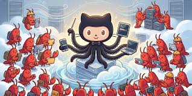

<div id="tech" class="content">
    <h1>核心技術：從 LLM 到 Agentic AI</h1>
    <div class="card">
        <h3>1. 自主規劃 (Planning)</h3>
        <p>AI 代理能將複雜目標拆解成可執行的子任務，而不只是依賴單一提示詞。</p>
        
    </div>
    <div class="card">
        <h3>2. 工具呼叫 (Tool Use)</h3>
        <p>如龍蝦助理能調用外部 API、操作瀏覽器，實現「動手做事」的能力。</p>
    </div>
</div>